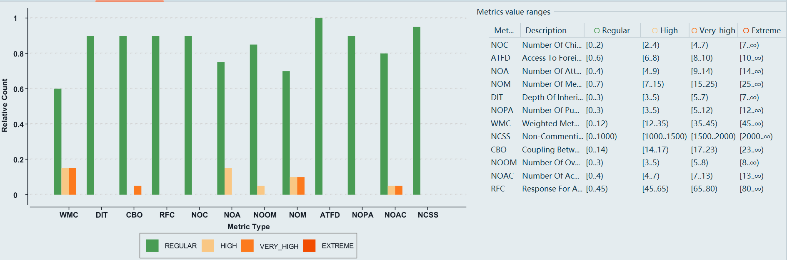
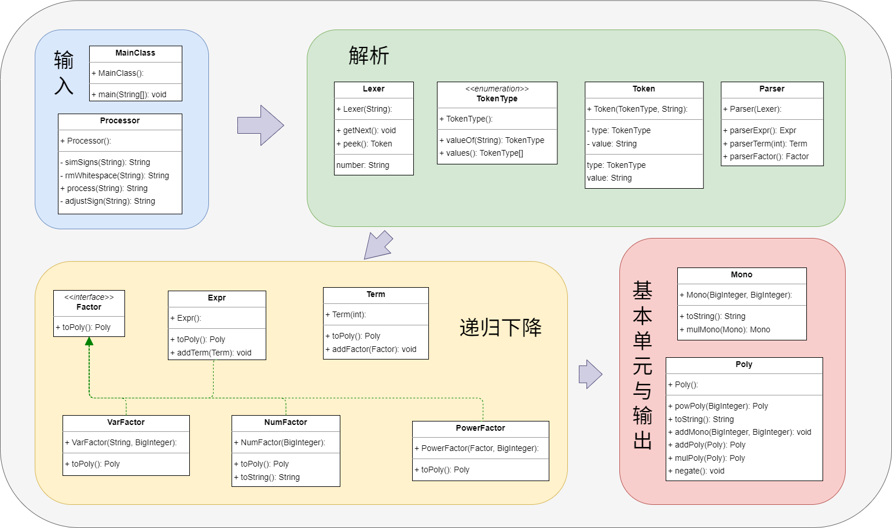
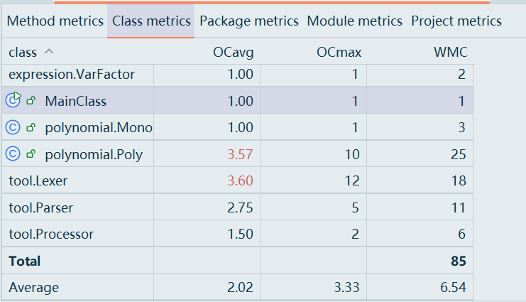
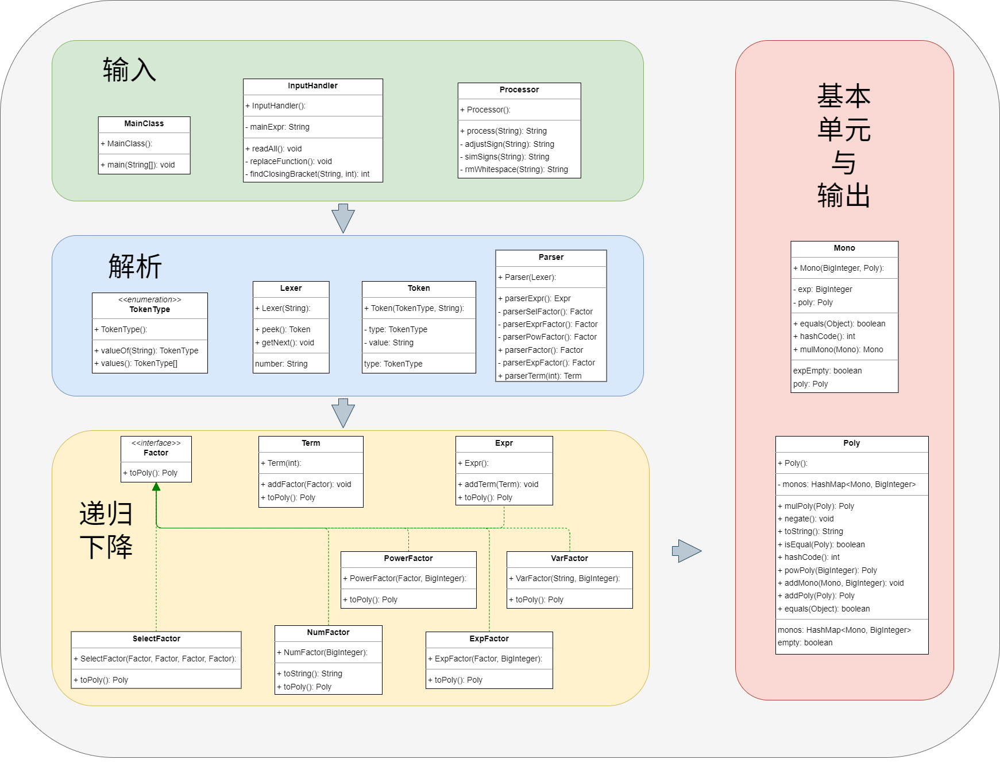
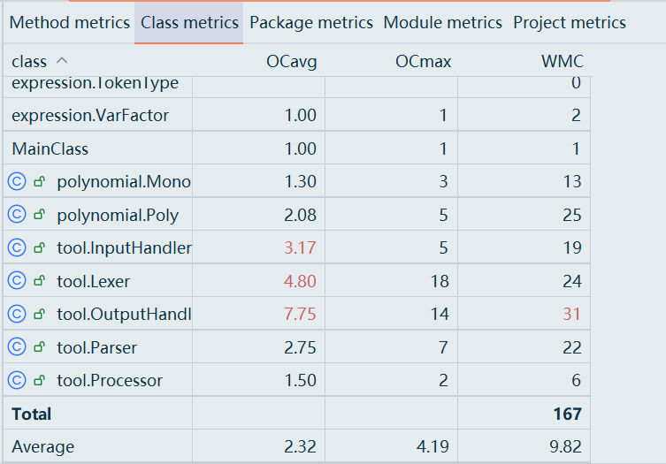
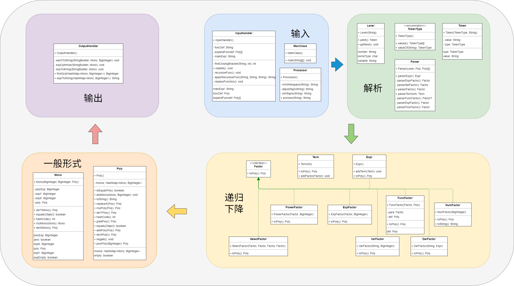
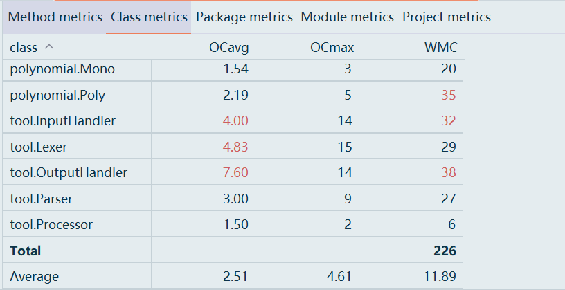

OO-Unit1
OO-Unit1-Blog
分析程序结构
度量

整体设计结构正常、略有复杂度偏高(集中在
Poly)，但耦合控制得不错，内聚基本良好。
hw1
- 输入部分：
processor预处理多余符号和空格。 - 解析部分：
TokenType存储Token类别，Lexer词法分析，Parser语法分析。 - 递归下降部分：
Expr表达式，Term项，Factor因子(接口)，VarFactor变量因子，NumFactor带符号整数因子，PowerFactor幂函数因子。 - 基本单元与输出部分：
Mono最基本单元，Poly计算形式。 优点：结构清晰，逻辑简单；缺点：有一些冗余重复的类,诸如
exprFactor和expr等等。

hw2
输入部分：新增
InputHandler，处理复杂输入与函数替换。- 解析部分：四个类都作了相应的更新。
- 递归下降部分：新增
SelectFactor选择式因子，ExpFactor指数函数因子。 - 基本单元与输出部分：
Mono最基本单元更新，Poly计算形式更新。 - 优点：输入输出单独处理，易于定位问题；缺点：
Poly类承担了大部分解析处理，复杂度偏高。

hw3
- 输入部分：
InputHandler新增处理递推函数。 - 解析部分：四个类都作了相应的更新。
- 递归下降部分：新增
FuncFactor函数因子，DefFactor求导因子。 - 基本单元与输出部分：
Mono最基本单元更新，Poly计算形式更新,增加求导运算。 - 优点：流程完整清晰，易于理解；缺点：类的复杂度分布不均衡。


架构设计体验
hw1
Processor预处理->expr解析为Poly->toString输出。
运算过程都放在Poly类里了。Poly的存储形式为<key,value>,key为expX,value为coe。hw1->hw2
新增InputHandler,SelFactor,ExpFactor。Mono存储的一般形式更新为a*x^b*exp(Poly)。
hw2->hw3
Mono类新增元素expY。Poly类新增求导方法。
新增derFactor类。
新增OutputHandler类，处理输出与优化。
整体延续将表达式全部处理为Poly再化简运算的模式。
重构
hw2采取预处理的框架，会把f(x)采取字符串替换的方式直接处理成表达式，这样parser就不需要大改，对hw1的改动也小，偷了很多懒。
但是就会出现这样一个问题：
像下面这个数据点：fatorC显然是超cost的,如果预处理的话一定会处理factorC,这样就会爆内存；如果是在parser之后再处理FuncFactor，就会只处理FactorD，不存在爆内存的问题。1
2
31
f(x)=x+2*x^2+3*x^3+4*x^4+8*x^8*exp(x)
[(x==1)?f(f(f(f(f(f(f(f(f(x))))))))):f((x+1))]
这时候为了解决这个问题，有两种方式。
- 一种是强化预处理，把
SelFactor也放在Processor里，先选择再函数替换。但作业要求，函数定义里不能有选择表达式，选择表达式里可以有函数。那只能先处理选择表达式，如果判断条件里有函数，就再先处理函数。这样Processor部分就会很臃肿且改起来也很难受。 - 一种是重构，在
parser之后再处理FuncFactor。这样就需要大改程序架构，并且会出现另外一个TLE问题，这种多嵌套处理解析会相比字符串预处理替换慢很多，并且由于exp()优化比较的存在，时间复杂度大大提高，这个问题也不好解决。最后艰难选择了重构框架，用类似于cache的方式解决TLE的问题。1
2
31
f(x)=exp(exp(exp(exp(exp(exp(x)^2)^2)^2)^2)^2)^2
f(f(f(f(x))))
其实也可以采取类似于模式判断的方式。新迭代设计
新增变量z。
新增多变量函数f(x,y)。
程序bug
第一次作业
- 公测：
- bug说明：无法处理
*后带有+/-的情况。 - 逻辑原因：因为程序的
parser机制默认*后是一个不带符号的因子。Processor预处理不完善带来的弊病。 - 处理：在预处理中加了一条专门处理替换
*后+/-的代码。
- bug说明：无法处理
- 强测：
- 错误数据点：
1
0013*( +02* -0010 -0017* x+ -x^ 00 *x ^02)* x+-(-+x*x* 002+- -7 *x^+06*0016+x*17)^06* (+ x*x-x^+4 *+0018 -x^ 04 *x^+007*x^ 07)^+08*( x *2*08+x^+5*008*+1) +-(-+ x^+002*x^+08 * x^ 007 + 015*x^1*-015) ^006*(++0018 *04 +x*x^+005* x)
- bug说明:无法处理
(后有连续+或者-的情况 - 逻辑原因:第一次作业采取预处理的架构，先处理掉第一个因子/项/表达式最开头的
+，将-替换为0-，再循环处理掉连续的正负号，这样(+-会被处理为(-,而parser时默认(后是一个没有正负号的因子，因此程序崩溃。
- 错误数据点：
- 互测：被hack9次，与强测发现的问题相同。
- 处理：改变符号处理机制，让
parser支持带符号整数的解析，彻底解决所有和符号有关的问题。
第二次作业
- 公测：无bug
- 强测：无bug
- 互测：被hack2次,同质bug
- 错误数据点:
1
20
(0)^0 - bug说明：无法处理
()^0的形式 - 逻辑原因：在
powPoly()的条件判断exprExp时if-else没有处理exprExp == 0情况。 - 处理：加上条件判断即可。
- 错误数据点:
第三次作业
- 公测：
- bug说明：
exp((x*y))输出为exp(xy)格式不对。 - 逻辑原因：
OutputHandler在迭代时没有特别处理Mono中expX==1&&expY==1的情况。
- bug说明：
- 强测：无bug
- 互测：性能测试
1
2
3
4
5
6
7
8
91
f(x)=exp(1)
0
f(f(f(f(f(f(f(f(f(f(f(f(f(f(f(f(f(f(f(f(f(f(f(f(f(f(f(f(f(f(x))))))))))))))))))))))))))))))
1
f(x) = exp(exp(exp(exp(exp(exp(x)^2)^2)^2)^2)^2)^2
0
exp(exp(exp(exp(exp(exp(exp(exp(exp(exp(exp(exp(f(f(f(f(x)))))^2)^2)^2)^2)^2)^2)^2)^2)^2)^2)^2)^2 - 采取cached的方式，存储
Mono对应的String,如果有直接调用，如果没有就生成。- 在Mono里新加一个
String类型参数cached - 修改一下
eachToString，由原来的直接输出键值对，新建StringBuilder temp存储key(mono)。
- 在Mono里新加一个
对比
- 出现了bug的方法集中在
Poly类和OutputHandler类,相应方法的复杂度都极高,行数一般在几十行，明显比未出现bug的方法行数更多也更复杂。 - 可以通过分层递归下降的方式来降低方法的复杂度。比如求导时可以参照exp2的方式分层求导解析，而不是都塞在
poly类。
hack策略
- 普遍问题
- 测试自己的程序时积累了10-20个复杂案例，包括一些普遍易错性问题，用这些案例测试，简化数据点再精准定位。
- 有效性：hw2中相当成功，发现5个人的bug。
- 针对性问题
- 让ai阅读互测代码，发现逻辑漏洞。
- 有效性：hw1可以有效定位，后面太麻烦了。
- 功能性问题
- 巧思类和性能类的极限测试。
- 有效性：hw2和hw3基本可以击溃所有没有特意解决这个问题或者架构本身原因导致bug的程序。
- 延续性问题
- 已知前面作业hack成功的测试点。
- 有效性：hw3延续hw2的数据点，有的数据点可以hack中5个人，有的不再有效。
优化处理
本单元的作业性能衡量标准只有最终展开结果的输出长度。所以我的所有优化处理都在OutputHanlder中,可以保证代码的简洁性与正确性。
- 基于Mono的普遍性输出，输出
a*x^b*y^c*exp(factor)^d - 简单优化：
a==1 || a==-1时省略a*b==1时省略^bb==0时省略*x^bc==1时省略^cc==0时省略*y^cexp()里是非exprFactor时,不需要额外()这一点的判断很容易出问题。
- 特殊优化：优先输出
+项。 - 提取：
exp((2*x))->exp(x)^2 - 分离：
exp((122345*x+122345*y+122347))->exp((x+y+1))^122345*exp(2)
- 第4点优化，采取比较提出最小公倍数和不提取的长度，再选择较短的输出的方法，容易被多重嵌套循环的数据点hack出性能问题。
- 第4点优化进一步，比较提取出哪一个公因数使得长度最短。
exp((3000*x+1000))->exp((3*x+1))^1000->exp((6*x+2))^500，因为遍历寻找最合适的公因数的比较次数过多，更容易被hack了，所以也没有做。- 第5点优化，太过复杂没有做。
大模型相关使用
作业代码生成
正确性：只在一小部分涉及到语法知识的时候，比如如何利用正则表达式替换字符方面使用了大模型。
辅助找 bug
使用大模型静态分析代码的逻辑bug。
成功找出自己hw2和hw3分别的1个bug。
互测时使用大模型分析别人的代码不太成功。
评测机搭建
hw2的DataMaker.py相当出色，基本测出了所有问题，但是忽略了一些简单的边界情形。
hw3注重测试代码的复杂度和性能，大模型的评测机在这一类数据点的生成方面不太行，很容易就超cost，使生成数据不合法。
心得体会
- 印象最深的是hw2到hw3的迭代过程。是否重构以及如何重构处理函数，这个问题真的困扰了我很久，花了很久考虑清楚如何改架构以及各个改动的有益处和弊病，这个思考和选择过程真的很难忘，也让我对架构设计和面向对象有了更深的认识。
- 如果说hw1还在懵懂探索没进入状态，那么hw2就熟练很多了，hw3就苦于如何提高性能和降低复杂度。
- 另外除了第一次在c房，其它两次我互测的成功率真的很低，完全没有耐心研究别人的代码(叹气)，还是得学着弄一个相当完善的评测机。
未来方向
对于复杂度这一块，一直迷迷糊糊的，如果能有对各种架构和优化的复杂度讲解就更好了。